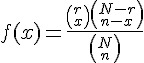
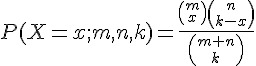
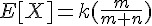
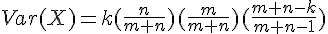
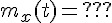

超幾何分布 (Hypergeometric distribution)

意義：N 個球中有白球有 r 個，黑球 N-r 個，取出 n 個球，其中有 x 個白球的機率; (取後不放回)
R 函數： hyper(m,n,k) = choose(m, x) choose(n, k-x) / choose(m+n, k)
- R 函數的意義：m+n 個球中有白球有 m 個，黑球 n 個，取出 k 個球，其中有 x 個白球的機率; (取後不放回)
- R 的網址：http://stat.ethz.ch/R-manual/R-patched/library/stats/html/Hypergeometric.html
- 課本與 R 之間對應公式：N=>m+n; n=>k; r=>m
- R 的公式： 
特性
- 
- 
動差生成函數： 
R 程式範例：曲線圖
m=10; n=5; k=8
x=seq(0,10)
plot(x, dhyper(x, m, n, k), type='h', main='dhyper(m=10,n=5,k=8)', xlab='x')
R 程式範例：
m <- 10; n <- 7; k <- 8
x <- 0:(k+1)
rbind(phyper(x, m, n, k), dhyper(x, m, n, k))
all(phyper(x, m, n, k) == cumsum(dhyper(x, m, n, k)))# FALSE
## but error is very small:
signif(phyper(x, m, n, k) - cumsum(dhyper(x, m, n, k)), digits=3)執行結果：
> m <- 10; n <- 7; k <- 8
> x <- 0:(k+1)
> rbind(phyper(x, m, n, k), dhyper(x, m, n, k))
[,1] [,2] [,3] [,4] [,5] [,6] [,7]
[1,] 0 0.0004113534 0.01336898 0.117030 0.4193747 0.7821884 0.9635952
[2,] 0 0.0004113534 0.01295763 0.103661 0.3023447 0.3628137 0.1814068
[,8] [,9] [,10]
[1,] 0.99814891 1.00000000 1
[2,] 0.03455368 0.00185109 0
> all(phyper(x, m, n, k) == cumsum(dhyper(x, m, n, k)))# FALSE
[1] FALSE
> ## but error is very small:
> signif(phyper(x, m, n, k) - cumsum(dhyper(x, m, n, k)), digits=3)
[1] 0.00e+00 0.00e+00 1.73e-18 0.00e+00 -5.55e-17 1.11e-16 2.22e-16
[8] 2.22e-16 2.22e-16 2.22e-16
>